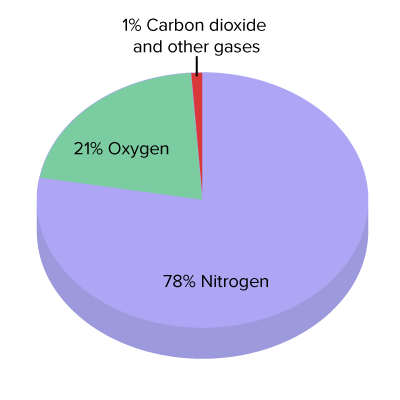

What is air?

You might have heard the word air in your daily life and might also know the meaning of it, but still here's a detailed version of what is air:-
Air is a combination of gases that make up the Earth's atmosphere. This mixture includes a set of gases, primarily nitrogen (about 78%) and oxygen (around 21%), that maintain relatively stable concentrations. These stable gases are essential for life, supporting processes such as respiration and photosynthesis. Additionally, there is a set of trace gases, including argon and carbon dioxide, whose concentrations fluctuate both spatially and temporally. These fluctuations can be influenced by natural events like volcanic eruptions and seasonal changes, as well as human activities such as industrial emissions and deforestation. Understanding these dynamics is crucial for studying climate change and air quality, as they impact both environmental health and weather patterns.
What is air pollution?
Air pollution is the presence of harmful substances in the atmosphere that can negatively impact health, the environment, and climate. Common pollutants include:
- Particulate Matter (PM): Tiny particles like dust and soot.
- Nitrogen Oxides (NOx): Gases from vehicle emissions.
- Sulfur Dioxide (SO2): Emitted from burning fossil fuels.
- Carbon Monoxide (CO): A colorless gas from incomplete combustion.
- Volatile Organic Compounds (VOCs): Chemicals from paints and fuels.
Air pollution can cause respiratory issues, heart disease, and contribute to climate change. Reducing it involves improving fuel quality and regulating emissions.
How to prevent air pollution?
Actions to Prevent Air Pollution
Use Public Transport: Walk, bike, or carpool.
Be Energy Efficient: Use energy-saving appliances.
Limit Pollutants: Avoid VOCs in products.
Reduce Waste: Recycle and use reusables.
Support Local and Organic: Buy sustainably.
Community Efforts
Join Clean Air Initiatives: Participate locally.
Plant Trees: Get involved in tree-planting.
Advocate for Green Spaces: Support parks.
Policy Advocacy
Promote Clean Energy: Support renewable sources.
Push for Emissions Standards: Advocate for stricter regulations.
Encourage Public Transport: Promote better infrastructure.
Education
Raise Awareness: Educate others.
Stay Informed: Follow air quality updates.
These steps can help combat air pollution!